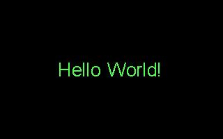

| [ < ] | [ > ] | [ << ] | [ Up ] | [ >> ] | [Top] | [Contents] | [Index] | [ ? ] |
TXTEXT Subfunction 1: draw text
Syntax:
TXTEXT 1, x, y, string
Draws the text string string centered at position x,y in the picture. For this extension, the origin 0,0 is defined to be the top left corner of the picture, not the center.
The string is written in the current font, size, and color for graphics
mode text, as specified by the %A command (see section 2.3.4.9 Graphics-Mode Text Attributes (%A)).
An important behind-the-scenes side effect of TXTEXT subfunction 1
is that the bounds of the written text (that is, the outline of a
box that covers the text) are saved in the argument buffer. More
accurately, the bounds of a box XSIZE by YSIZE pixels
centered on x,y are saved. (1). XSIZE and YSZIE are each 60 pixels, by
default, but can be set by Cogsys variables 93 and 94, respectively.
These bounds are recalled and used by TXTEXT subfunctions 2, 3 and
4.
The following testlist writes the words `Hello world!' in the center of the picture in green lettering.
%X[txtext.cxr] %M2%C2 %A[C10,F1] %I[1,1,1600,100,Hello World!] #B[1,20]#R |
Here is the picture created:
